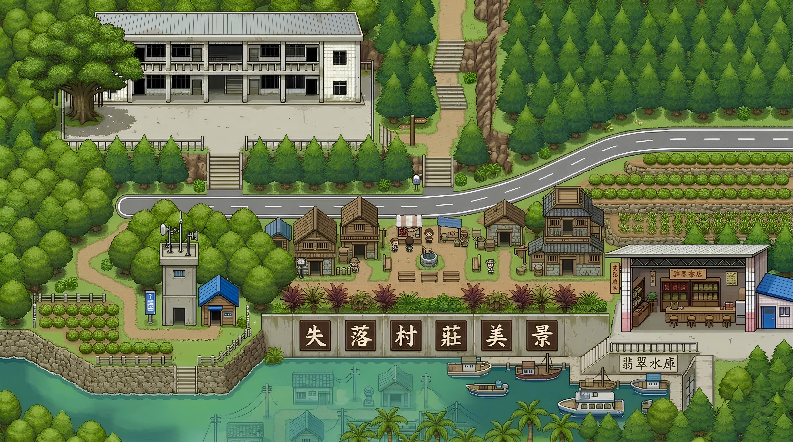
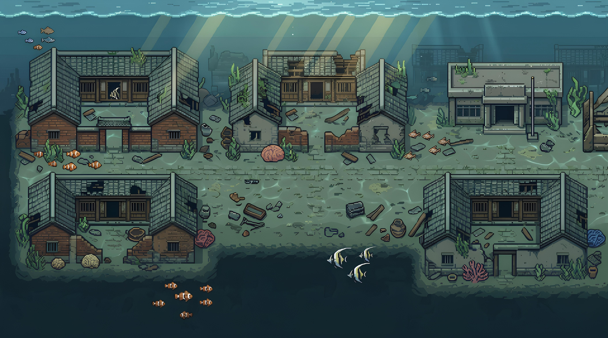
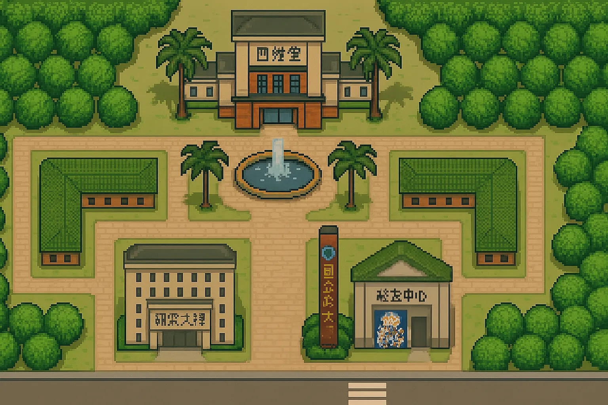

蓋亞造界 GaiaCraftGaiaCraft
我的角色My role技術總監Technical Director
用像素 RPG 驅動真實永續行為，並以 AI 將耆老記憶化為遊戲資產永久保存。A pixel RPG that turns real sustainability actions into game progress, while AI preserves elders' oral memory as game assets.
永安的地方故事，已做成可以親自探索的作品：AR 版、宣傳影片與《永安探險記》遊戲。Yong'an's local stories, ready to explore: an AR experience, a promo video and the Yong'an Adventure game.
從 2D 到 3D 的演進From 2D to 3D
- V1 永續循環：執行永續行為 → 點數 → 企業 ESG 數據回流V1 Circular: actions → points → corporate ESG data loop
- V2 文化科技：LLM + ASR 將耆老口述轉為像素 RPG 資產V2 Cultural tech: LLM + ASR turn elders' oral history into pixel RPG assets
- V3 校園版：LINE 行為驗證＋實體 Dashboard，已與信義書院合作V3 Campus: LINE verification + physical dashboard, live with Shinsyi Academy
- V4 政大百年校園 3D 遊戲（nccu100）：從像素地圖走進 3D，我負責建築模型；正式遊玩版本就是 play.gaiacraft.twV4 NCCU Centennial 3D campus (nccu100): from pixel maps to 3D — I built the architecture models. Play it at play.gaiacraft.tw
薪火計畫 — 阿嬤記憶公仔GaiaCraft Spark — memory doll
深坑炮仔崙的 90 歲阿嬤是整座山的活記憶庫。我們用 AI 記錄她的聲音，3D 列印她的樣貌，製成會說話的記憶公仔——擔任景點導覽與無人商店引導，讓記憶在薪盡前留存。A 90-year-old grandma in Shenkeng holds the living memory of a whole hill. We captured her voice with AI and 3D-printed her likeness into a talking memory doll for tourist guidance and an unmanned store.
USR 數位孿生地圖USR digital twin maps
為永安、深坑兩個 USR 場域製作像素地圖，遊客可在虛擬空間走動探索在地文史。Pixel maps of the Yong'an and Shenkeng USR sites let visitors walk through local history in virtual space.
影片展示Demo videos
薪火計畫 — 阿嬤記憶公仔GaiaCraft Spark
蓋亞造鎮 · 永安篇GaiaCraft · Yong'an
2026 商學院永續行動提案競賽2026 Business School Sustainability Competition